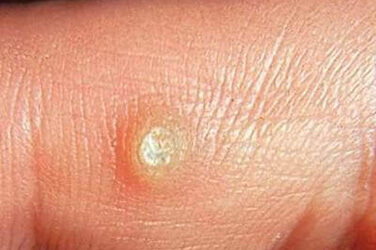
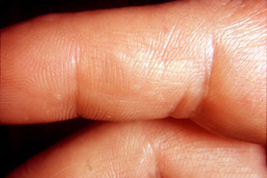

Helló mindenkinek! Ismét én vagyok az! Anna! Köszönöm, hogy ismét engem olvastok! Friss hírekből nem is olyan sok gyűlt össze nálam. És eléggé aggódtam mielőtt nekiláttam volna megírni ezt a vlogot, mert nem is tududtam igazán, hogy miről is írjak. Ültem és gondolkoztam, iszogattam a kávémat és a harmadik csészénél megértettem, hogy valami hasznos dolgot osztok meg az olvasókkal. Mert minden egyes vlog csak szórakozás.
Most komolyan fogunk beszélni
Igen! Úgy döntöttem, hogy arról fogok írni, hogyan szedtem össze a papillómákat az edzőteremben és miként szabadultam meg tőlük. Ez hosszas, unalmas volt, de végül legyőztem ezt az undorító betegséget és a bőröm tiszta és egészséges.
Igyekszem hetente legalább kétszer járni az edzőterembe. Nem csinálok semmi különlegeset, futok egy kicsit, nyújtok és edzek a súlyokkal. Nem tudom azt mondani, hogy túlterhelem magamat, de igyekszem nem lustálkodni.
A barátnőim azt hitték, hogy azért járok az edzőterembe, hogy megpihenjek a férjemtől és a gyermekektől. Ha-ha-ha! Természetesen!!! ☺)) Mindenki vágyik arra, hogy megpihenjen egy kicsit a kötelezettségeitől.
Papillómák az edzőteremben? Na ne!
A kezeimen papillómák jelentek meg. A szépséges kezeim! Az elején azt gondoltam, hogy magától el fog múlni, de ez az utálatos betegség csak nagyobb lett.
Honnan van? Azt hiszem, fel tudnám szedni azokat a parazitákat, amelyek a súlyzókon vagy más szimulátorokon voltak, amelyeket a kezemmel tartottam.
Nagyon el voltam keserdve, mivel különös figyelmet fordítok a személyes higiéniára. Állandóan mosom a kezeimet, ahogy bejövök az udvarról, speciális antibakterális sprékkel fújom be őket.
És mégis, a testemben lévő paraziták miatt ott jelentek meg papillómák, ahol a legkevésbé számítottam rájuk.
Hogyan szabadultam meg a papillómáktól
Az első, amit tenni akartam - fogni egy ollót és levágni! Most megértettem, hogy még jó, hogy nem tettem meg. Ennek a betegségnek az otthoni operáció nem ártott volna, azonban én felszedhettem valamilyen fertőzést.
Ezért megrendeltem egy krémet, amely lefagyasztja a papillómákat.
Sok ismerősöm ajánlotta nekem, igaz csak az egyik barátnőm használta és azt mondta, hogy a hatás nem volt valamilyen óriási. De úgy döntöttem, hogy kipróbálom, hiszen mindenki ezeket a szereket javasolja. Bizonyára nem hiába.
Így is történt, a hatás gyenge volt. A papillómák egy része elkezdett eltűnni, de én azt akartam, hogy mind eltűnjön.

Többször is megismételtem a procedúrát De a papillómák makacsan elutasították az eltűnést.
Többé semmilyen papillóma
Több sikertelen próbálkozás után úgy döntöttem, hogy műtéti úton eltávolítom őket. De aztán a férjem nővére felajánlott egy másik gyógyszert. Ami segít leküzdeni a papillómák valódi okát - paraziták a testemben
Megrendeltem a szert... a papillómák elkezdtek eltűnni, majd végleg eltűntek!
Lehet, hogy nem mondok semmi újat, de egyszerűen muszáj vagyok javasolni ezt a csodacseppet, a szert.
És tovább még érdekesenn! Úgy döntöttem, hogy utánaolvasok. Érdekes lett számomra, hogy miért működik ennyire jól ez a csepp.
Igyekszem mindent érthetően elmagyarázni: a szer a bőr azon sejtjeire fejti ki a hatását amelyekre ráragad a papillóma vírus és ahonnan később a papillómák jelennek meg.
Immunitás!!! Majdnem elfelejtettem! A gyógyszer nemcsak megszünteti a papillómákat, de még a bőrt is megvédi, hogy ez a betegség ne jelenjen meg ismét
Biztos vagyok benne, hogy minden működik, mert azóta nem jelent meg rajtam egyetlen szemölcs vagy papillóma sem.
Bár, még ha meg is jelennének, többé nem pánikolnék, hanem egyszerűen venném a cseppeket.

Ezzel nálam ennyi! Ha valakinek hasznos volt a történetem, írjátok meg a hozzászólásokban. És azt is, hogy ki mivel szabadult meg a papillómáktól és szemölcsöktől, nekem is érdekes ez.
Itt a hivatalos megrendelőlap, amelyen keresztül cseppeket rendeltem!
FIGYELEM! Óvakodj a hamisítványoktól! A kizárólag a hivatalos megrendelőlapon keresztül rendelhető Magyarországon.
Hozzászólások
Reply Share
Reply Share
Reply Share
Reply Share
Reply Share
Reply Share
Reply Share
Reply Share
Reply Share
Reply Share
Reply Share
Reply Share
Reply Share